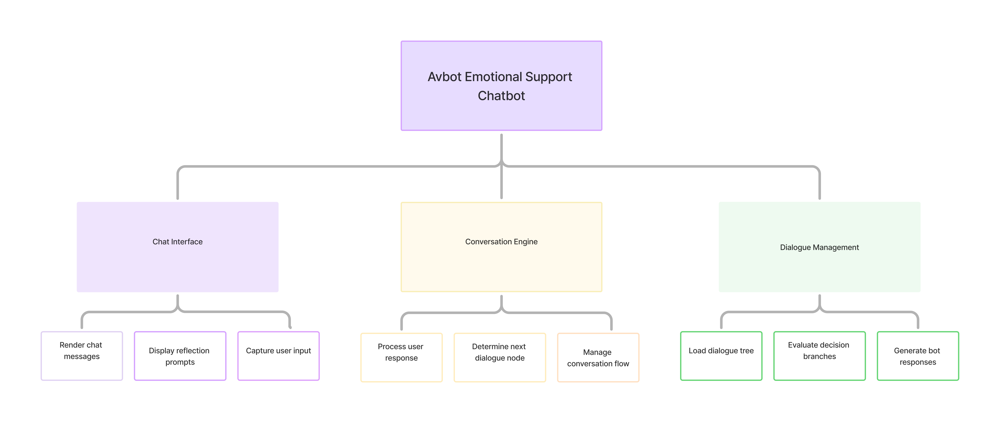

Case Study
Avbot
A conversational chatbot designed to support self-kindness and emotional reflection through guided dialogue.

Project Overview
Avbot is a conversational interface designed to help users practise self-kindness through guided reflection.
The chatbot creates a calm digital space where users can pause, acknowledge their emotions, and respond to themselves with greater compassion through supportive prompts.
Rather than replacing professional mental health support, Avbot encourages small moments of emotional awareness in everyday situations.
The Problem
Accessing emotional support is not always easy, especially for young adults and people from underrepresented communities. Therapy can be expensive, difficult to access, or avoided due to stigma.
While digital tools such as Woebot and Wysa exist, many rely heavily on AI models that can produce unpredictable responses and often require personal data.
This project explores whether a simpler, structured chatbot could offer a safe and accessible way for users to practise self-kindness through guided conversation.
Design Approach
The project followed a Human-Centred Design Thinking approach, focusing on understanding user needs before designing the interaction. The process moved through stages of empathising with users, defining the problem, exploring ideas, prototyping, and testing.
This approach was chosen because it prioritises empathy, inclusivity, and accessibility particularly important when designing tools related to emotional wellbeing.
Figma was used to design interface mockups and conversation flows before development. The chatbot was then implemented as a lightweight browser application using HTML, CSS, and JavaScript.
Early usability feedback was gathered through think-aloud testing and a walkthrough session with a project supervisor to refine the conversational flow and interaction design.
Because the project involves emotional wellbeing, ethical considerations were also important. A visible safety banner clarifies that Avbot is not a crisis service and provides links to appropriate support resources.
Architecture
Avbot is implemented as a lightweight frontend application using HTML, CSS, and JavaScript.
The chatbot is powered by a structured conversation engine where dialogue nodes are defined in a flow configuration. Each node specifies the type of interaction (message, input, or choice), the emotional intervention used, and the next step in the conversation.
Conversation elements are rendered dynamically in the chat interface as the dialogue progresses, allowing the reflection experience to adapt to user input while keeping responses predictable and safe.

Live Application
Avbot is deployed as a live web application and can be accessed directly in the browser.
The hosted version demonstrates the complete reflection experience including the entry interface, safety notice, and guided conversational flow.
Key Features
- Structured conversation engine guiding reflection
- Emotion identification and validation prompts
- Interactive regulation tools (breathing exercise, timed pause, reflection cards)
- Session summary showing reflection techniques used
- Safety checks for high-risk language with support signposting
- Lightweight browser-based implementation
Conversation elements are rendered dynamically in the chat interface as the dialogue progresses. The conversation engine processes user responses and determines the next dialogue node based on the dialogue structure. Dialogue management evaluates decision branches and generates appropriate bot responses while maintaining a safe and predictable interaction flow.

Outcome
Avbot demonstrates how structured conversational interfaces can support emotional reflection while remaining ethically responsible and accessible.
The project highlights how lightweight chatbot systems can guide users through supportive reflection while avoiding the risks associated with fully generative AI systems.
At the end of each session, users receive a short summary of the reflection techniques they practised, reinforcing the idea of self-kindness as a repeatable skill.